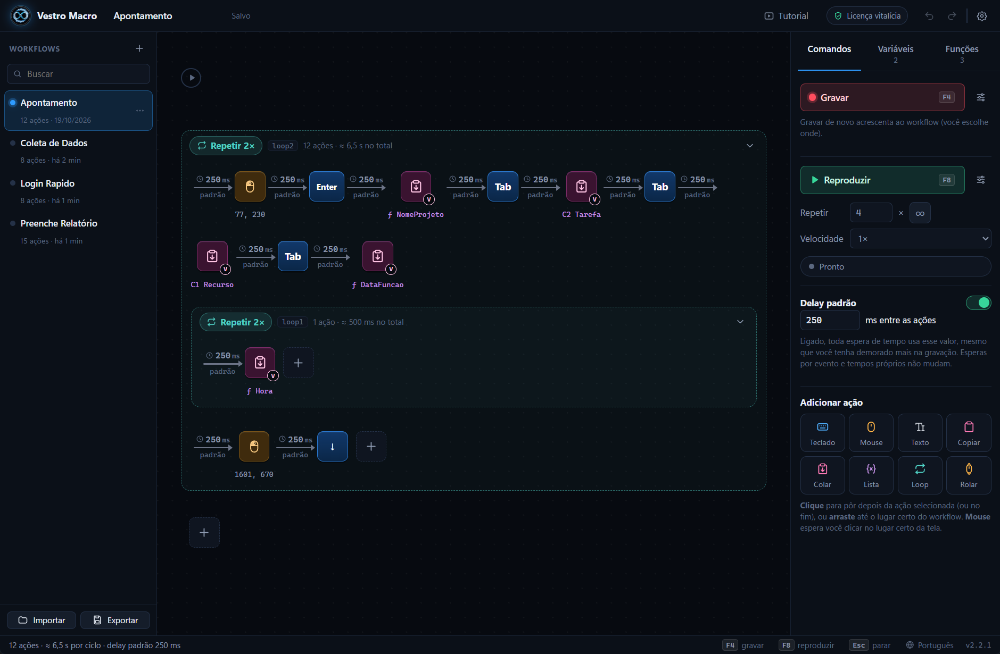
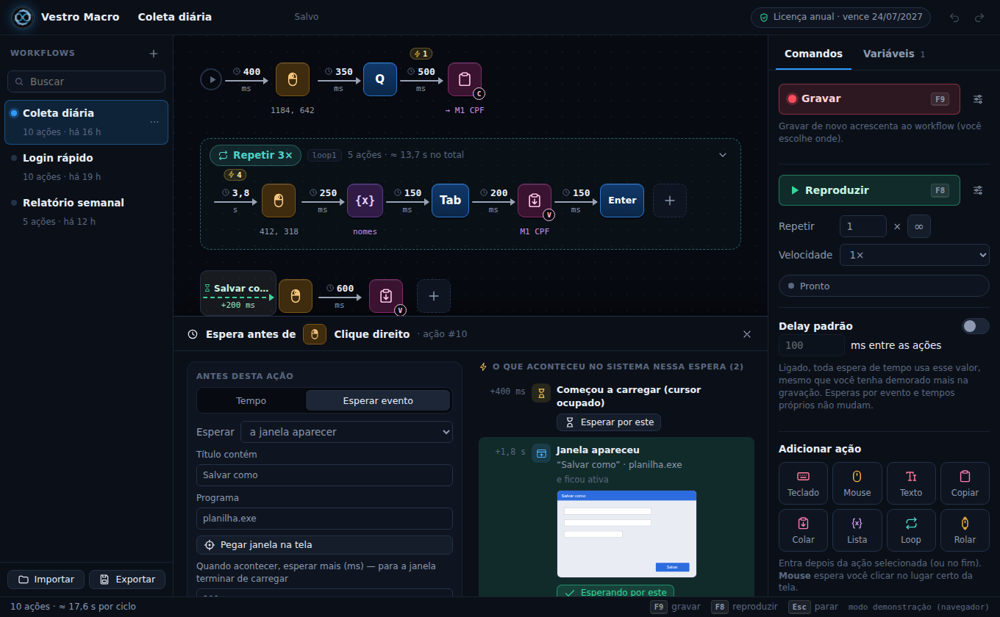

Mensal
Licença fixaLicença flutuante
R$39,90/mês R$129,90/mês por vaga
Para começar sem compromisso. Renova mês a mês.
Quero a fixa mensal Quero a flutuante mensalPreencher o mesmo cadastro pela centésima vez. Passar dados de um sistema para outro na mão. Clicar nos mesmos botões até o fim do expediente. É tempo que some do seu dia, e é aí que aparecem os erros de digitação. Faça a tarefa uma vez: o Vestro grava e repete quantas vezes você precisar, esperando cada tela carregar.
Teste grátis por 30 dias
Para Windows 10 e 11 · versão 2.2 · tudo liberado, sem cadastro

Recursos
Cada tecla e cada clique vira uma caixinha, e cada seta é a espera até a próxima ação. Arraste, duplique, agrupe e desfaça.
Troque “esperar 3 segundos” por “esperar a janela aparecer”, “o programa terminar de carregar” ou “uma imagem aparecer na tela”.
Repita trechos quantas vezes quiser, com loops dentro de loops, e digite um valor diferente de uma lista a cada volta.
O Ctrl+C guarda o texto numa memória, como “CPF”, e o Colar usa esse valor em outro programa, sem ficar alternando janelas.
MAIUSCULA, PREENCHER, SO_NUMEROS, HOJE… monte o texto que vai ser colado, como numa planilha.
Grave os cliques do mouse como você já faz: esquerdo, direito e rolagem. O Vestro guarda o ponto exato da tela e repete ali. Mudou um botão de lugar? Clique no ponto novo e pronto.
Como funciona
Faça a tarefa uma vez, do jeito que você já faz. O Vestro anota cada tecla e cada clique.
Troque tempos fixos por esperas, crie loops e use listas e funções. Tudo salva sozinho.
Mande reproduzir e deixe o Vestro repetir quantas vezes você precisar.

Licenças
Antes de comprar, teste: todo download vem com 30 dias grátis, com tudo liberado.
Licença fixaLicença flutuante
R$39,90/mês R$129,90/mês por vaga
Para começar sem compromisso. Renova mês a mês.
Quero a fixa mensal Quero a flutuante mensalLicença fixaLicença flutuante
R$399,00/ano R$1.299,00/ano por vaga
sai por R$ 33,25 por mêssai por R$ 108,25 por vaga, por mês
12 meses de uso pelo preço de 10, para quem já usa no dia a dia.
Quero a fixa anual Quero a flutuante anualDo plano escolhido à chave ativada no seu Vestro, em três passos.
VSTR-… e ativa no Vestro. Tudo o que você montou no teste continua lá.Em breve: compra direto pelo site, com a chave liberada na hora.
VSTR-… sai na hora: na sua conta e no seu e-mail. Ative no Vestro: tudo o que você montou no teste continua lá.Fora do Brasil, a compra está temporariamente indisponível. Você já pode baixar e usar grátis por 30 dias, com tudo liberado.
Versão 2.2 para Windows 10 e 11 (64 bits). Um arquivo só, sem instalação: é só abrir e usar. Os primeiros 30 dias são grátis, com tudo liberado.
Dúvidas
Baixe e abra o Vestro: são 30 dias com tudo liberado, sem cadastro e sem cartão. O teste é um por computador. Depois dos 30 dias, sem licença, o Vestro continua funcionando no modo restrito: grava, reproduz e edita, com 2 memórias e 2 constantes. Listas, funções e loops ficam para a versão completa. Ative uma licença e tudo volta, inclusive os workflows que você já montou.
Para começar o teste grátis e para ativar e conferir a licença, sim. O teste e a licença fixa continuam funcionando por até 5 dias sem internet. A flutuante precisa da conexão para segurar a vaga.
Pode. No computador novo, digite a chave e peça para usar a licença ali: o computador atual aprova. Depois disso, ela fica 90 dias sem poder mudar de novo. Se o computador antigo não existe mais (formatou, quebrou), entre em contato com o suporte por e-mail.
Programas que controlam o teclado e o mouse às vezes são sinalizados por precaução. Baixe o Vestro só por este site. Se aparecer “O Windows protegeu o computador”, clique em Mais informações e depois em Executar assim mesmo.
O Windows não deixa um programa comum controlar outro que está aberto como administrador. Feche o Vestro e abra com o botão direito, em Executar como administrador. O próprio Vestro avisa quando isso acontece.
Em cada workflow, use Exportar: sai um arquivo .json que você importa no outro PC. O mesmo arquivo serve de backup e para mandar o workflow para outra pessoa.
Não. O Vestro Macro é para Windows 10 e 11.
Dúvidas, orçamento para equipes, compra de licenças e suporte.